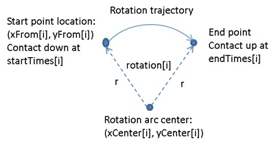
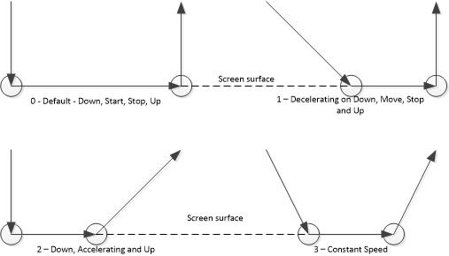

Using Robot Automation for Touch Hardware Certification Tests
During Windows 7, multiple partners built robots to automate the touch hardware certification tests. The involved lines and points were laid out using predefined locations so the process was fairly straightforward. In Windows 8, many of the locations are randomized so an API is required to help the robots to find these points and lines. This topic covers the API that was designed to provide that information to the robot and let it command the test in a meaningful way.
Glossary
| Term | Definition |
|---|---|
|
Touch certification tool |
The tool used for testing touch digitizers as part of the Windows Hardware Certification program. |
|
Robot controller |
The server controlling the robot. This is the main consumer of the ILogoAutomation interface. |
|
HCK controller |
The server that controls the testing. |
|
Interaction |
Single input tests, such as a tap, double tap, or drag. This is the most granular part of touch hardware certification testing. A touch hardware certification test is comprised of a set of interactions. |
|
Test |
A collection of interactions. |
How to use these APIs
Callbacks
Callbacks are asynchronous, will not always occur on the same thread, and will originate from a multithreaded apartment.
Control Flow Overview
Each touch hardware certification run consists of a series of tests that is configurable by the Hardware Certification Kit (HCK) controller. Each test is designed to test a specific aspect of a touch digitizer, such as a tap, double tap, or drag test. Every test is composed of an interaction the robot is expected to perform and repeat a set number of times. The goal of the robot is to complete all of the tests by iterating through each one sequentially and performing each interaction.
|
|
|---|
| While the basic idea of the interaction remains the same throughout the test, details such as the start and end points, are changed randomly. |
Connecting to the Touch Certification Tool
The touch certification tool must be started from the HCK controller, or manually by using command line. The robot should not start the touch certification tool remotely. If the ILogoAutomation interface is created when the touch certification tool is not running, the interface will not be created.
|
|
|---|
| It is not possible to automatically start the robot when the touch certification tool starts. The robot must be started manually for every test run or you must try to create the ILogoAutomation interface until it succeeds. |
Selecting a test
Each test that the robot performs is identified by a unique name that remains the same between touch certification test runs. The initial screen in the touch certification tool is the test selection page and is treated as a test with a constant name of Table of Contents. To get the list of tests, use QueryAvailableTests. To start a test, use StartTest.
Running a test
Each test includes a set of interactions. The touch certification tool sends a notification when an interaction starts and finishes. The robot should call ILogoAutomation::QueryInteraction between the notifications and then perform an interaction. When all of the required interactions are complete, the touch certification tool will stop the test and send a test completed notification by using ILogoEventHandler::TestCompleted. At this point, the robot can move to the next test.
Error handling
Some of the error cases are as follows:
-
The robot performs an interaction but does not receive an ILogoEventHandler::InteractionCompleted callback. The robot controller should have a timeout to detect this. After the timeout, the robot can determine the reason by calling ILogoAutomation::QueryCurrentState.
-
If the digitizer could not recognize a contact, the touch certification tool will wait indefinitely for input on most tests. If the current state has 0 contacts down and ILogoAutomation::QueryCurrentInteraction returns the same interaction ID as before, the robot should fail the test because the digitizer could not recognize a contact.
-
If the digitizer reports that contact has not departed, no interactions will pass until the contact has departed.
-
If the digitizer could not recognize a contact, the touch certification tool will wait indefinitely for input on most tests. If the current state has 0 contacts down and ILogoAutomation::QueryCurrentInteraction returns the same interaction ID as before, the robot should fail the test because the digitizer could not recognize a contact.
-
The robot gets more ILogoEventHandler::InteractionCompleted callbacks than the number of interactions it has performed.
-
This is likely due to device ghosting. The robot should resynchronize its state with the touch certification tool by using ILogoAutomation::QueryCurrentState and ILogoAutomation::QueryCurrentInteraction.
-
This is likely due to device ghosting. The robot should resynchronize its state with the touch certification tool by using ILogoAutomation::QueryCurrentState and ILogoAutomation::QueryCurrentInteraction.
Automated Logo Flow Diagram
API Definitions
There are three interfaces that you can use:
Interface: ILogoAutomation
The ILogoAutomation interface allows you to do the following:
-
Query information about the state of the touch certification tool by using QueryCurrentVersion, QueryCurrentState, QueryAvailableTests.
-
Control the flow of the touch certification tool similar to the buttons a human would use by using StartTest, ExitTest, Exit, HideStatusUI, ShowStatusUI.
-
Register touch certification tool events, allowing the robot and the touch certification tool states to be more easily synchronized by using RegisterEventSink and UnregisterEventSink.
Overview
interface ILogoAutomation : IDispatch {
HRESULT QueryCurrentVersion(
[out] ULONG* version);
HRESULT QueryCurrentState(
[out] BSTR* testName,
[out] ULONG* nContactsDown);
HRESULT QueryAvailableTests(
[out] VARIANT* testNames);
HRESULT StartTest(
[in] BSTR testName);
HRESULT ExitTest();
HRESULT Exit();
HRESULT HideStatusUI();
HRESULT ShowStatusUI();
HRESULT QueryInteraction(
[out] IInteractionObject** interaction);
HRESULT FailInteraction(
[in] ULONG interactionId,
[in] BSTR reason);
HRESULT RegisterEventSink(
[in] ILogoEventHandler* eventSink,
[out] ULONG* cookie);
HRESULT UnregisterEventSink(
[in] ULONG cookie);
};
Methods
| Name | Description | ||
|---|---|---|---|
|
QueryCurrentVersion |
Returns the current version of the touch certification tool. |
||
|
QueryCurrentState |
Returns the current state of the touch certification tool, including the test that is displaying and the number of contacts that it thinks are down. testName The name of either the test selection page (named “Table of Contents”) or an interaction-driven test. The client is responsible for deallocating testName with a call to SysFreeString. nContactsDown The number of contacts that the touch certification tool thinks are down. This can be different from the actual number of contacts down. For more information, see Error handling. |
||
|
QueryAvailableTests |
Returns an array of available test names as a Variant. You can get string pointers from this parameter by using VariantToStringArrayAlloc. The client is responsible for clearing and deallocating this memory. The touch certification tool will not pass until all tests are completed successfully. |
||
|
StartTest |
Starts the test identified by testName. The touch certification tool must be on the test selection screen to start a test. You can use QueryCurrentState to get the current screen or ExitTest to return to the test selection screen.
|
||
|
ExitTest |
Return from a test to the test selection page. |
||
|
Exit |
Exit the touch certification tool. |
||
|
HideStatusUI |
Hide the status UI. The UI remains hidden until ShowStatusUI is called. It is important to hide this UI before performing any interactions because the status UI may take focus and interfere with the interaction. |
||
|
ShowStatusUI |
Show the status UI. You can use this if the touch certification tool needs human interaction. The status UI is the recommended way to use the touch certification tool interactively. |
||
|
QueryInteraction |
Returns a pointer to an IInteractionObject. This is used to describe what kind of input the touch certification tool is expecting. The following table summarizes the error conditions for this method and the error code that is returned:
|
||
|
FailInteraction |
This can be used to fail any one interaction. Used repeatedly it can fail an entire test. This call will fail if the interaction ID does not match the current interaction number (returns 0x80040005). The message is an optional informative reason that is written to the log. |
||
|
RegisterEventSink |
Register an event sink with the touch certification tool. For more information, see Interface: ILogoEventHandler. |
||
|
UnregisterEventSink |
Pass in the cookie returned from RegisterEventSink to unregister an event sink.
|
When to implement
You should not implement the interface. It is implemented by the touch certification tool itself.
Error codes
The following table summarizes the custom error codes defined for the ILogoAutomation interface:
| Error code | Description |
|---|---|
|
0x80040000 |
The test does not exist. |
|
0x80040001 |
The test has already been completed. |
|
0x80040002 |
The parameter name is not found. |
|
0x80040003 |
There is no information for the interaction. |
|
0x80040005 |
The interaction ID is not correct. |
Interface: IInteractionObject
This object defines the interaction that a test expects in order for it to pass. A robot looks at the interaction name and properties to determine the required movements.
IInteractionObject provides access to a property bag that holds the information required to complete an interaction. Not all parameters are used for all gesture types. The parameter names are case sensitive.
Overview
interface IInteractionObject : IDispatch {
HRESULT SetParameter(
[in] BSTR name,
[in] VARIANT value);
HRESULT GetParameter(
[in] BSTR name,
[out] VARIANT* value);
}
Methods
| Name | Description | ||
|---|---|---|---|
|
SetParameter |
Sets a parameter value of IInteractionObject. The object keeps a mapping from parameter name to its value. A robot controller should not need to call this method to change the IInteractionObject. |
||
|
GetParameter |
Gets a parameter value from IInteractionObject. For example, the following sample code shows how to call this method to get the values of the parameters named id and interactionType: IInteractionObject* pInteraction = NULL; VARIANT varTemp; ULONG id = 0; PWSTR pszInteractionType = NULL; m_pLogo->QueryInteraction(&pInteraction); // Get interaction id, which is of ULONG type. pInteraction->GetParameter(CComBSTR(L"id"), &varTemp)); VariantToUInt32(varTemp, &id); VariantClear(&varTemp); // Get interactionType, which is of BSTR type. pInteraction->GetParameter(CComBSTR(L"interactionType"), &varTemp); VariantToStringAlloc(varTemp, &pszInteractionType); VariantClear(&varTemp); // Insert logic here to get more/less parameters as needed, and // use the data to drive the robot to perform the desired input. pInteraction->Release(); CoTaskMemFree(pszInteractionType);
|
Parameters
The following are a list of parameters for the IInteractionObject interface:
|
|
|---|
| The type given is a subtype within Variant. You can get the values for startTimes by using VariantToDoubleArrayAlloc. |
| Name | Type | Description | ||
|---|---|---|---|---|
|
id |
ULONG |
The interaction id is set to 0 at the start of each test and increments for every interaction. |
||
|
interactionType |
BSTR |
The interactionType, such as tap, arc, and line, defines how to get from each starting point to each ending point and gives the intent of the interaction object. See the section named Interaction Types for a full listing. |
||
|
count |
ULONG |
The number of contacts in each array. |
||
|
xFrom |
DOUBLE* (Array of count elements) |
The starting X position of each contact with respect to the top left of the screen and the positive axis running to the right and down.
Unit: millimeters |
||
|
xTo |
DOUBLE* (Array of count elements) |
The ending X position of each contact. Unit: millimeters |
||
|
yFrom |
DOUBLE* (Array of count elements) |
The starting Y position of each contact.
Unit: millimeters |
||
|
yTo |
DOUBLE* (Array of count elements) |
The ending Y position of each contact. Unit: millimeters |
||
|
startTimes |
DOUBLE* (Array of count elements) |
The start time offset from 0 of each contact.
Unit: milliseconds |
||
|
endTimes |
DOUBLE* (Array of count elements) |
The end time offset from 0 of each contact. The duration of any contact is given by endTimes[contact] –startTimes[contact]. The contact speed can be calculated from startTime or endTime and startPosition and endPosition. Unless a specific acceleration profile is given, the robot uses whatever is convenient within the time bounds. The speed should remain relatively smooth. Unit: milliseconds |
||
|
endHoldTimes |
DOUBLE* (Array of count elements) |
The length of time each contact should be pressed on the surface before releasing. Unit: milliseconds |
||
|
rotation |
DOUBLE* (Array of count elements) |
The amount of rotation moving clockwise from start to end. Unit: radians |
||
|
xCenter |
DOUBLE* (Array of count elements) |
The x center point to rotate around for circle and arcs for each contact. Unit: millimeters |
||
|
yCenter |
DOUBLE* (Array of count elements) |
The y center point to rotate around for circle and arcs for each contact. Unit: millimeters |
||
|
zDistance |
DOUBLE* (Array of count elements) |
The distance a contact should remain from the screen. Unit: millimeters |
||
|
accelerationProfile |
ULONG |
The expected acceleration profile. For a list of definitions, see the Acceleration Profiles section. |
Interaction Types
More than one interaction type can cover an interaction that the robot could perform. For example, a tap on the screen could be performed with a line interaction with the same start and stop points. In these cases, a more specific type is given to hint at the intent of the test. The interaction type of IInteractionObject can be retrieved by calling the GetParameter method with the name parameter as interactionType. The returned out-parameter is of the BSTR type indicating what interaction type it is.
The following table lists the interaction types:
| Name | Description | Notes | |||||||||||||||||||||||||
|---|---|---|---|---|---|---|---|---|---|---|---|---|---|---|---|---|---|---|---|---|---|---|---|---|---|---|---|
|
Tap |
A set of quick down up motions |
Used IInteractionObject parameters: count, xFrom, yFrom, xTo, yTo, startTimes, endTimes Unused IInteractionObject parameters: rotation, xCenter, yCenter, zDistance, accelerationProfile, endHoldTimes For example, at the starting time offset startTimes[i] (i<count), the robot should place contact i at the coordinate location (xFrom[i], yFrom[i]). It should remain in contact until endTimes[i], when the contact should be released. It is expected (xFrom[i] == xTo[i]) and (yFrom[i] == yTo[i]) so the xTo and yTo parameters can be ignored. |
|||||||||||||||||||||||||
|
Line |
A [set] of non-intersecting lines |
Used IInteractionObject parameters: count, xFrom, yFrom, xTo, yTo, startTimes, endTimes Unused IInteractionObject parameters: rotation, xCenter, yCenter, zDistance, accelerationProfile, endHoldTimes For example, at the starting time offset startTimes[i] (i<count) the robot should place contact i at the coordinate location (xFrom[i], yFrom[i]). It should remain in contact and move in straight line to (xTo[i], yTo[i]) at the time offset of endTimes[i], when the contact should be released. There is no restriction on the moving speed and robot can do whatever is convenient. |
|||||||||||||||||||||||||
|
Rotate |
A [set] of circular arcs |
Used IInteractionObject parameters: count, xFrom, yFrom, xCenter, yCenter, rotation, startTimes, endTimes Unused IInteractionObject parameters: xTo, yTo, zDistance accelerationProfile, endHoldTimes For example. at the starting time offset startTimes[i] (i<count), the robot should place contact i at the coordinate location (xFrom[i], yFrom[i]). It should remain in contact and move in arc clockwise by radian indicated by the value of rotation[i]. The arc center is at (xCenter[i], yCenter[i]). The interaction must finish by endTimes[i], when the contact should be released.
Figure 1 shows how these parameters are used to perform the rotate interaction. |
|||||||||||||||||||||||||
|
Hover |
Hold contacts above the screen without touching |
Used IInteractionObject parameters: count, xFrom, yFrom, xTo, yTo, zDistance, startTimes, endTimes Unused IInteractionObject parameters: rotation, xCenter, yCenter, accelerationProfile, endHoldTimes For example, at the starting time offset startTimes[i] (i<count), the robot should hover contact i at the coordinate location (xFrom[i], yFrom[i]). The distance of the contact from the screen surface is defined by zDistance[i]. Note this represents the distance for an average human finger. For a robotic finger – the robot should adjust this height with respect to the difference in capacitance (if any). The hovering contact should remain stable and be removed at endTimes[i]. For this release, the hovering is stationary, and the xTo and yTo parameters can be ignored. |
|||||||||||||||||||||||||
|
Zoom |
Diverging or converging non-intersecting lines |
Used IInteractionObject parameters: count, xFrom, yFrom, xTo, yTo, startTimes, endTimes Unused IInteractionObject Parameters: Rotation, xCenter, yCenter, zDistance, accelerationProfile, endHoldTimes For example, zoom interaction is similar to Line interaction, with the exception that one contact will be stationary. If the contact i is stationary, then the following will be true: (xFrom[i] == xTo[i]) and (yFrom[i] == yTo[i]). Please refer to the Line interaction on how to perform the Zoom interaction. For a pan interaction, the parameters are the same but the contact will not be stationary. Therefore, (xFrom[i] != xTo[i]) and (yFrom[i] != yTo[i]). |
|||||||||||||||||||||||||
|
TouchKeyboard |
Multiple taps, linearly offset from one another |
Used IInteractionObject parameters: count, xFrom, yFrom, xTo, yTo, startTimes, endTimes Unused IInteractionObject parameters: rotation, xCenter, yCenter, zDistance, accelerationProfile, endHoldTimes For example, the TouchKeyboard interaction is a sequence of tapping on the screen, just like a person tapping the on-screen soft keyboard. At the starting time offset startTimes[i] (i<count), the robot should place contact i at the coordinate location (xFrom[i], yFrom[i]). It should remain in contact until the time offset of endTimes[i], when the contact should be released. Just like Tap interaction, it is expected (xFrom[i] == xTo[i]) and (yFrom[i] == yTo[i]) so the xTo and yTo parameters can be ignored. Suppose there are 4 contacts required by the interaction and the parameters have the following value:
It is a sequence of tapping 4 points in line from (20, 40) to (80, 40). The unit is in millimeters. The robot should perform the interaction as follows:
|
|||||||||||||||||||||||||
|
Non-Interaction |
No interaction needed |
Used IInteractionObject parameters: count, startTimes, endTimes Unused IInteractionObject parameters: rotation, xCenter, yCenter, zDistance, xFrom, yFrom, xTo, yTo, accelerationProfile, endHoldTimes endTimes[0] gives the length of time to not perform any interaction. The robot should not place any contacts on the screen. If hovering, the contacts must be far enough away from the screen so the device will not recognize a hovering contact. startTimes[0] is expected to be 0. |
|||||||||||||||||||||||||
|
Toss |
A single line with a defined accelerationProfile. Toss interactions have their speed checked by logo. For this release, only acceleration profile 2 (Accelerate) is used. |
Used IInteractionObject parameters: count, xFrom, yFrom, xTo, yTo, accelerationProfile, startTimes, endTimes Unused IInteractionObject parameters: rotation, xCenter, yCenter, zDistance, endHoldTimes For example, suppose the accelerationProfile[0] is 2 (accelerate), at start time offset startTimes[0], the robot should place contact 0 down at start point (xFrom[0], yFrom[0]). It should move the contact towards end point (xTo[0], yTo[0]), accelerating. By the time endTimes[0], the contact should reach end point and the robot should lift the contact up, without stopping. |
|||||||||||||||||||||||||
|
MoveAndHold |
Similar to Line, but the contacts should be held at the end of movement for a specific length of time before releasing |
Used IInteractionObject parameters: count, xFrom, yFrom, xTo, yTo, startTimes, endTimes, endHoldTimes Unused IInteractionObject parameters: rotation, xCenter, yCenter, zDistance, accelerationProfile This interaction is similar to Line interaction, except that at the end of movement, the contacts are not released immediately. Instead, they are held pressed down to the surface for an amount of time specified by the endHoldTimes parameter. The end time of movement for contact i is calculated by (endTimes[i] –endHoldTimes[i]). For example, at the starting time offset startTimes[i] (i<count), the robot should place contact i at the coordinate location (xFrom[i], yFrom[i]). It should remain in contact and move in straight line to (xTo[i], yTo[i]) at the time offset of (endTimes[i] - endHoldTimes[i]). Then the contact should be held stable until time offset endTimes[i], when it is released from the surface. There is no restriction on the moving speed and robot can do whatever is convenient, as long as the contacts reach destination at or before the required time offset. For this release, you can expect the number of contacts (count) to be 1. |
|
|
|---|
| Even parameters marked as unused may be defined. The API consumer should be robust against extra information stored in the InteractionObject. |
Rotate Interaction Type and Parameters
The following figure (Figure 1) shows how the parameters of a rotation interaction are used to perform a rotate interaction.
Acceleration Profiles
The following table lists the four acceleration profiles:
| Profile Name | Value | Description |
|---|---|---|
|
Default |
0 |
The contact goes straight down to the screen surface, moves to the end point, stops and lifts up from the surface. |
|
Decelerate |
1 |
The contact moves at certain speed horizontally, decelerating and is lowered to make a contact on the screen surface, moves to the end point, stops and lifts up from the surface. |
|
Accelerate |
2 |
The contact goes straight down to the screen surface and then starts to move to the end point accelerating. It is lifted up while moving at the end point. |
|
Constant speed |
3 |
The contact moves at a certain speed horizontally. While lowering down to make a contact with the screen surface, it maintains the same horizontal speed. On the surface it moves to the end point and lifts up while moving. Its horizontal speed does not change during the entire interaction. |
The following figure (Figure 2) shows the robot contact movement for the acceleration profiles. Start contact point and end contact point refer to the circles in the diagram. The diagram shows the robot contact movement viewed from the side of the device screen surface.
When to implement
You should not implement the interface. You will be passed a pointer to this interface in response to a call to ILogoAutomation::QueryInteraction.
Error codes
The following table summarizes the interface custom error codes defined for the IInteractionObject interface:
| Error code | Description |
|---|---|
|
0x80040000 |
The test does not exist. |
|
0x80040001 |
The test has already been completed. |
|
0x80040002 |
The parameter name is not found. |
|
0x80040003 |
There is no information for the interaction. |
|
0x80040005 |
The interaction ID is not correct. |
Interface: ILogoEventHandler
This interface specifies how the touch certification tool will notify the robot controller about what is happening in the test run. The robot controller should implement this interface to get callbacks from the touch certification tool for status updates.
Implementation of this interface should not place time consuming work or any ILogoAutomation method calls inside of these methods since it will block the touch certification tool. Unless these methods return, the touch certification tool will not respond to inputs or any ILogoAutomation method calls.
 Caution Caution |
|---|
| Failing to follow this rule may cause the touch certification tool to stop responding. |
Overview
interface ILogoEventHandler : IDispatch{
HRESULT LogoExit();
HRESULT TestStarted(
[in] BSTR testName);
HRESULT TestCompleted(
[in] BSTR testName,
[in] BOOL testSucceeded);
HRESULT InteractionStarted(
[in] BSTR testName,
[in] ULONG interactionId);
HRESULT InteractionCompleted(
[in] BSTR testName,
[in] ULONG interactionId,
[in] BOOL interactionSucceeded,
[in] BSTR failureReason);
};
Methods
| Name | Description |
|---|---|
|
LogoExit |
Called when the touch certification tool is about to exit, usually in response to a call to ILogoAutomation::Exit(). The robot should clean all of its state related to the touch certification tool. |
|
TestStarted |
Called whenever the touch certification tool switches to a different test page, including the Table of Contents. At this point, the robot should call ILogoAutomation::StartTest if testName is “Table of Contents,” or call ILogoAutomation::QueryInteraction to get information on the interaction expected and then perform the interaction. |
|
TestCompleted |
Called whenever a test is completed. At this point, the robot should call ILogoAutomation::ExitTest to return to the table of contents, and then StartTest to start a new test. |
|
InteractionStarted |
Called when the touch certification tool sees the first contact of a new interaction going. |
|
InteractionCompleted |
Called whenever the touch certification tool sees that all input has departed and the interaction is over. This call may be followed by TestCompleted. If this event is not being fired, it is an error case that the robot should handle. For more information about error handling, see Error handling. |
Generate Files to Integrate Robot to HCK
To integrate the robot to the HCK, the files logo3.tlb, logo3.h and logo3_i.c are used. These define the interfaces described above.
Define logo3.idl library
Define the logo3.idl. For more information on IDL (Interface Definition Language) file, see this web page.
Refer to the following sample:
import "oaidl.idl";
import "ocidl.idl";
import "Propidl.idl";
[
object,
dual,
uuid(25d2b24d-679d-4131-89a7-eeaf10f4cb85),
pointer_default(unique)
]
interface ILogoEventHandler : IDispatch{
HRESULT LogoExit();
HRESULT TestStarted(
[in] BSTR testName);
HRESULT TestCompleted(
[in] BSTR testName,
[in] BOOL testSucceeded);
HRESULT InteractionStarted(
[in] BSTR testName,
[in] ULONG interactionId);
HRESULT InteractionCompleted(
[in] BSTR testName,
[in] ULONG interactionId,
[in] BOOL interactionSucceeded,
[in] BSTR failureReason);
};
[
object,
uuid(2F900384-8ED7-417D-87EA-F2C9F419F356),
dual,
nonextensible,
pointer_default(unique)
]
interface IInteractionObject : IDispatch{
HRESULT SetParameter(
[in] BSTR name,
[in] VARIANT value);
HRESULT GetParameter(
[in] BSTR name,
[out] VARIANT* value);
};
[
object,
uuid(453D0AC0-AF7C-465B-AA61-2641C5F24366),
dual,
pointer_default(unique)
]
interface ILogoAutomation : IDispatch {
HRESULT QueryCurrentVersion(
[out] ULONG* version);
HRESULT QueryCurrentState(
[out] BSTR* testName,
[out] ULONG* nContactsDown);
HRESULT QueryAvailableTests(
[out] VARIANT* testNames);
HRESULT StartTest(
[in] BSTR testName);
HRESULT ExitTest();
HRESULT Exit();
HRESULT HideStatusUI();
HRESULT ShowStatusUI();
HRESULT QueryInteraction(
[out] IInteractionObject** interaction);
HRESULT FailInteraction(
[in] ULONG interactionId,
[in] BSTR reason);
HRESULT RegisterEventSink(
[in] ILogoEventHandler* eventSink,
[out] ULONG* cookie);
HRESULT UnregisterEventSink(
[in] ULONG cookie);
};
[
uuid(58147694-B012-4922-8A48-48E3ABCC1B57),
version(1.0),
]
library logo3Lib
{
importlib("stdole2.tlb");
interface ILogoEventHandler;
[
uuid(D371B1A6-30AF-4F43-8202-E13A3C93DA8C)
]
coclass LogoAutomation
{
[default] interface ILogoAutomation;
};
[
uuid(8F34541E-0742-470D-9AA9-100E7984EA22)
]
coclass InteractionObject
{
[default] interface IInteractionObject;
};
};
Generate logo3.tlb, logo3.h and logo3_i.c
Once the interfaces and the library have been defined, use the MIDL (Microsoft Interface Definition Language) compiler to create logo3.tlb, logo3.h and logo3_i.c. Use the following process:
-
Install Visual Studio and the SDK.
-
Define logo3.idle file as shown above.
-
Use the Visual Studio command prompt to run midl. If not, ensure that path to cl.exe is accessible.
-
Run midl.exe. For example,
midl.exe /out c:\Folder c:\Folder\logo3.idl. -
Create a Visual Studio project
-
Add the logo3.idl file to the resources of the project.
-
Copy logo3_i.c and logo3.h to the project’s folder
-
In Visual Studio, add project Properties > Additional dependenciesPropsys.lib
-
Build the project.
When to implement
Developers should implement this interface and register it with the touch certification tool by calling ILogoAutomation::RegisterEventSink. This allows the robot controller to respond to touch certification tool events, instead of polling the state of the tool.
After registration, the interface will get callbacks for any events that happen.
|
|
|---|
| Make sure to call this method to unregister the event sink before the robot controller is finished. Failing to do so may cause the status UI to freeze for several minutes before DCOM times out. The touch certification tool may try to call the event sink to deliver status updates and will be blocked by an event sink that is not responding. Eventually, the RPC call will timeout and the touch certification tool will recover and automatically unregister the event sink that is not responding. If the robot controller crashes, or the network is not available, the call to UnregisterEventSink cannot be guaranteed so the status UI may stop responding for a while. In such cases, if you want to preserve the previous touch certification tool test results, you should wait at least 6 minutes to allow the touch certification tool to recover from an RPC call timeout. If you do not need to preserve the previous test results, you can stop the touch certification tool process. |
Code Sample
This is a partial example of how a robot controller could use the robot APIs.
|
|
|---|
| This example does not cover error handling. For more information about error handling, see Error handling. |
#include <stdio.h>
#include <tchar.h>
#include <Windows.h>
#include <Propvarutil.h>
#include <string>
#include <vector>
#include <assert.h>
// Make sure you have set the correct header file path to the SDK.
#include #logo3.h#
#include #logo3_i.c#
#define CHECK_HR(EXPR) \
do \
{ \
hr = (EXPR); \
if (FAILED(hr)) \
{ \
printf("File = %s, Line# = %u, %s failed with 0x%x\n", __FILE__, __LINE__, #EXPR, hr); \
goto Exit; \
} \
} while (FALSE, FALSE); \
class AutoBSTR
{
public:
AutoBSTR(PCWSTR str)
{
m_str = SysAllocString(str);
}
~AutoBSTR()
{
SysFreeString(m_str);
}
operator BSTR() const throw()
{
return m_str;
}
private:
BSTR m_str;
};
class LogoEventHandler : public ILogoEventHandler
{
public:
LogoEventHandler(ILogoAutomation* plogo) :
m_refCount(1),
m_eventTestStarted(NULL),
m_eventInteractionCompleted(NULL),
m_currentInteractionId(0)
{
}
~LogoEventHandler()
{
if (m_eventTestStarted != NULL)
{
CloseHandle(m_eventTestStarted);
}
if (m_eventInteractionCompleted != NULL)
{
CloseHandle(m_eventInteractionCompleted);
}
}
HRESULT Initialize()
{
m_eventTestStarted = CreateEvent(NULL, FALSE, FALSE, NULL);
if (m_eventTestStarted == NULL)
{
return HRESULT_FROM_WIN32(GetLastError());
}
m_eventInteractionCompleted = CreateEvent(NULL, FALSE, FALSE, NULL);
if (m_eventInteractionCompleted == NULL)
{
return HRESULT_FROM_WIN32(GetLastError());
}
return S_OK;
}
public:
// ILogoEventHandler Methods
STDMETHOD(TestStarted)(BSTR testName)
{
wprintf(L"[Logo] Test started. Name = %s\n", testName);
SetEvent(m_eventTestStarted);
return S_OK;
}
STDMETHOD(TestCompleted)(BSTR testName, BOOL testSucceeded)
{
wprintf(L"[Logo] Test Completed. Name = %s, Result = %s\n", testName,
testSucceeded ? L"Passed" : L"Failed");
return S_OK;
}
STDMETHOD(InteractionStarted)(BSTR testName, ULONG interactionId)
{
wprintf(L"[Logo] Interaction started. id = %u\n", interactionId);
return S_OK;
}
STDMETHOD(InteractionCompleted)(BSTR testName, ULONG interactionId, BOOL interactionSucceeded, BSTR failureReason)
{
wprintf(L"[Logo] Interaction completed. id = %u, %s\n", interactionId,
interactionSucceeded ? L"succeeded" : L"failed");
if (!interactionSucceeded)
{
wprintf(L"[Logo] Failure reason: %s\n", failureReason);
}
SysFreeString(failureReason);
m_currentInteractionId = interactionId;
SetEvent(m_eventInteractionCompleted);
return S_OK;
}
STDMETHOD(LogoExit)()
{
wprintf(L"[Logo] Logo exited.\n");
return S_OK;
}
// end of ILogoEventHandler Methods
// IUnknown methods
STDMETHODIMP_(ULONG) AddRef()
{
InterlockedIncrement(&m_refCount);
return m_refCount;
}
STDMETHODIMP_(ULONG) Release()
{
InterlockedDecrement(&m_refCount);
if (m_refCount == 0)
{
delete this;
}
return m_refCount;
}
STDMETHODIMP QueryInterface(
__in REFIID riid,
__out void **ppvObject)
{
if (ppvObject == NULL)
{
return E_POINTER;
}
if (riid == IID_ILogoEventHandler || riid == IID_IUnknown)
{
AddRef();
*ppvObject = this;
return S_OK;
}
*ppvObject = NULL;
return E_NOINTERFACE;
}
// End of IUnknown methods
// IDispatch methods
STDMETHODIMP GetTypeInfoCount(
__RPC__out UINT *pctinfo)
{
return E_NOTIMPL;
}
STDMETHODIMP GetTypeInfo(
__in UINT iTInfo,
__in LCID lcid,
__RPC__deref_out_opt ITypeInfo **ppTInfo)
{
return E_NOTIMPL;
}
STDMETHODIMP GetIDsOfNames(
__RPC__in REFIID riid,
__RPC__in_ecount_full(cNames) LPOLESTR *rgszNames,
__RPC__in_range(0,16384) UINT cNames,
LCID lcid,
__RPC__out_ecount_full(cNames) DISPID *rgDispId)
{
return E_NOTIMPL;
}
STDMETHODIMP Invoke(
/* [in] */ DISPID dispIdMember,
/* [in] */ REFIID riid,
/* [in] */ LCID lcid,
/* [in] */ WORD wFlags,
/* [out][in] */ DISPPARAMS *pDispParams,
/* [out] */ VARIANT *pVarResult,
/* [out] */ EXCEPINFO *pExcepInfo,
/* [out] */ UINT *puArgErr)
{
return E_NOTIMPL;
}
// End of IDispatch methods
public:
HRESULT WaitForTestStarted()
{
DWORD index = 0;
HRESULT hr = CoWaitForMultipleHandles(
0, //flags
10 * 1000, //timeout
1, //nHandles
&m_eventTestStarted, //handles
&index);
return hr;
}
HRESULT WaitForInteractionCompleted(
__out ULONG* interactionId)
{
DWORD index = 0;
HRESULT hr = CoWaitForMultipleHandles(
0, //flags
10 * 1000, //timeout
1, //nHandles
&m_eventInteractionCompleted, //handles
&index);
*interactionId = m_currentInteractionId;
return hr;
}
private:
volatile ULONG m_refCount;
HANDLE m_eventTestStarted;
HANDLE m_eventInteractionCompleted;
ULONG m_currentInteractionId;
};
class RobotController
{
public:
RobotController()
:
m_logo(NULL),
m_logoEventHandler(NULL),
m_registrationCookie(0),
m_testNames(NULL),
m_nTests(0)
{
}
~RobotController()
{
if (m_logo != NULL)
{
// Make sure we unregister the event sink before exit.
m_logo->UnregisterEventSink(m_registrationCookie);
m_logo->Release();
}
if (m_logoEventHandler != NULL)
{
m_logoEventHandler->Release();
}
VariantClear(&m_testNamesVar);
}
HRESULT ConnectToLogo()
{
HRESULT hr = S_OK;
printf("[Robot Controller] Connecting to logo\n");
// Logo should be running before robot controller trying to connect to it. Otherwise, this call will fail.
CHECK_HR(CoCreateInstance(
CLSID_LogoAutomation,
NULL,
CLSCTX_LOCAL_SERVER, // | CLSCTX_REMOTE_SERVER for DCOM
IID_ILogoAutomation,
(LPVOID*)&m_logo));
printf("[Robot Controller] Connected to logo\n");
m_logoEventHandler = new LogoEventHandler(m_logo);
if (m_logoEventHandler == NULL)
{
printf("Cannot allocate memory for LogoEventHandler.\n");
hr = E_OUTOFMEMORY;
goto Exit;
}
CHECK_HR(m_logoEventHandler->Initialize());
// Register event sink to logo so we can get status updates from logo.
CHECK_HR(m_logo->RegisterEventSink(m_logoEventHandler, &m_registrationCookie));
CHECK_HR(QueryTestNames());
Exit:
return hr;
}
HRESULT RunTest(UINT index)
{
HRESULT hr = S_OK;
if (index >= m_nTests)
{
return E_INVALIDARG;
}
// First we need to make sure logo is on the "Table of Contents" page. Calling ExitTest() will
// cause logo to display the "Table of Contents" page.
CHECK_HR(m_logo->ExitTest());
// Start the target test - logo will go to the test page.
CHECK_HR(m_logo->StartTest(m_testNames[index]));
CHECK_HR(m_logoEventHandler->WaitForTestStarted());
CHECK_HR(RunInteractions());
Exit:
return hr;
}
HRESULT RunTests()
{
HRESULT hr = S_OK;
// Test 0 is the "Table of Contents" page. Real tests start from index 1.
for (UINT i = 1; i < m_nTests; i++)
{
CHECK_HR(RunTest(i));
}
// Shows "Table of Contents" page for status of all tests.
CHECK_HR(m_logo->ExitTest());
Exit:
return hr;
}
private:
HRESULT QueryTestNames()
{
HRESULT hr = S_OK;
CHECK_HR(m_logo->QueryAvailableTests(&m_testNamesVar));
m_nTests = m_testNamesVar.parray->rgsabound->cElements;
m_testNames = (BSTR*)(m_testNamesVar.parray->pvData);
printf("Test names---- (%u)\n", m_nTests);
for (UINT i = 0; i < m_nTests; i++)
{
wprintf(L"test %u: %s\n", i, m_testNames[i]);
}
Exit:
return hr;
}
HRESULT QueryAndPerformInteraction()
{
HRESULT hr = S_OK;
IInteractionObject* interaction = NULL;
{
ULONG nContacts = 0;
BSTR currentTestName = NULL;
// Check current state to make sure no contacts down before a new interaction.
CHECK_HR(m_logo->QueryCurrentState(¤tTestName, &nContacts));
if (nContacts != 0)
{
printf("[Robot Controller] There are contacts down on the screen surface. Cannot perform a new interaction.");
// Real robot controller can instruct robot to remove any contacts from the screen surface instead
// of failing here.
hr = E_UNEXPECTED;
goto Exit;
}
hr = m_logo->QueryInteraction(&interaction);
if (hr == 0x80040001)
{
printf("[Robot Controller] No more interactions - test has completed.\n");
goto Exit;
}
else if (hr == 0x80040003)
{
printf("[Robot Controller] This test does not have any interaction object and requires human input.\n");
goto Exit;
}
CHECK_HR(hr);
VARIANT var = {};
ULONG id;
CHECK_HR(interaction->GetParameter(AutoBSTR(L"id"), &var));
CHECK_HR(VariantToUInt32(var, &id));
VariantClear(&var);
CHECK_HR(interaction->GetParameter(AutoBSTR(L"interactionType"), &var));
std::wstring interactionType(var.bstrVal);
VariantClear(&var);
wprintf(L"[Robot Controller] Interaction id = %u, type = %s\n", id, interactionType.c_str());
bool interactionPerformed = false;
// Get interaction parameters based on the type of interaction and used the parameters to
// instruct the robot to perform the interaction.
if (interactionType == L"Line")
{
CHECK_HR(GetParamAndPerformLineInteraction(interaction, &interactionPerformed));
}
else if (interactionType == L"Non-Interaction")
{
CHECK_HR(GetParamAndPerformNonInteraction(interaction, &interactionPerformed));
}
// else ...
// The sample code only demonstrates how to get interaction parameters for Line and Non-Interaction
// interactions. For other interaction types, please refer to the documentation for what parameters
// to retrieve from the IInteractionObject. They are similar to how it is done in this sample.
if (interactionPerformed)
{
// If interaction was performed, we should wait for the interaction to complete. A callback
// from logo to the m_logoEventHandler tells that.
ULONG completedInteractionId = 0;
CHECK_HR(m_logoEventHandler->WaitForInteractionCompleted(&completedInteractionId));
if (id != completedInteractionId)
{
// Interaction id mismatch - it might be device issue or robot performed multiple interactions.
hr = E_UNEXPECTED;
goto Exit;
}
}
else
{
// We couldn't perform the interaction. Set hr to 0x80040001 (Test has already been completed)
// to allow the sample code to move to the next test.
hr = 0x80040001;
goto Exit;
}
}
Exit:
if (interaction != NULL)
{
interaction->Release();
}
return hr;
}
HRESULT GetParamAndPerformNonInteraction(
__in IInteractionObject* interaction,
__out bool* interactionPerformed)
{
HRESULT hr = S_OK;
DOUBLE* endTimes = NULL;
ULONG nEndTimes = 0;
CHECK_HR(GetDoubles(interaction, L"endTimes", &endTimes, &nEndTimes));
// It is expected for Non-interaction, there is only 1 element in endTimes array.
assert(nEndTimes == 1);
DWORD sleepTime = (DWORD)(endTimes[0]);
printf("[Robot Controller] Perform non-interaction - no contact of the screen for %ums\n", sleepTime);
Sleep(sleepTime);
*interactionPerformed = true;
Exit:
if (endTimes != NULL)
{
CoTaskMemFree(endTimes);
}
return hr;
}
HRESULT GetParamAndPerformLineInteraction(
__in IInteractionObject* interaction,
__out bool* interactionPerformed)
{
HRESULT hr = S_OK;
DOUBLE* xFrom = NULL;
DOUBLE* yFrom = NULL;
DOUBLE* xTo = NULL;
DOUBLE* yTo = NULL;
DOUBLE* startTimes = NULL;
DOUBLE* endTimes = NULL;
ULONG count = 0;
ULONG n = 0;
// Get all the interaction parameters used by a Line interaction.
CHECK_HR(GetDoubles(interaction, L"xFrom", &xFrom, &n));
count = n;
CHECK_HR(GetDoubles(interaction, L"yFrom", &yFrom, &n));
assert(count == n);
CHECK_HR(GetDoubles(interaction, L"xTo", &xTo, &n));
assert(count == n);
CHECK_HR(GetDoubles(interaction, L"yTo", &yTo, &n));
assert(count == n);
CHECK_HR(GetDoubles(interaction, L"startTimes", &startTimes, &n));
assert(count == n);
CHECK_HR(GetDoubles(interaction, L"endTimes", &endTimes, &n));
assert(count == n);
printf("Interaction parameters:\n");
PrintVector(L"xFrom", xFrom, count);
PrintVector(L"yFrom", yFrom, count);
PrintVector(L"xTo", xTo, count);
PrintVector(L"yTo", yTo, count);
PrintVector(L"startTimes", startTimes, count);
PrintVector(L"endTimes", endTimes, count);
// Instruct robot to perform interaction based on the parameters.
// This sample does not show how to control the robot as it is very specific to
// the robot designer. This sample does not perform this interaction.
*interactionPerformed = false;
Exit:
if (xFrom != NULL)
{
CoTaskMemFree(xFrom);
}
if (yFrom != NULL)
{
CoTaskMemFree(yFrom);
}
if (xTo != NULL)
{
CoTaskMemFree(xTo);
}
if (yTo != NULL)
{
CoTaskMemFree(yTo);
}
if (startTimes != NULL)
{
CoTaskMemFree(startTimes);
}
if (endTimes != NULL)
{
CoTaskMemFree(endTimes);
}
return hr;
}
HRESULT RunInteractions()
{
HRESULT hr = S_OK;
// Hide the status UI before doing interaction.
CHECK_HR(m_logo->HideStatusUI());
bool hasMoreIteration = true;
while (hasMoreIteration)
{
// Usually a test needs multiple iterations of interactions.
hr = QueryAndPerformInteraction();
if (hr == 0x80040001)
{
// The test has been completed.
hasMoreIteration = false;
hr = S_OK;
}
CHECK_HR(hr);
}
Exit:
// Re-display the status UI for human to review the test status.
m_logo->ShowStatusUI();
return hr;
}
HRESULT GetDoubles(
__in IInteractionObject *interaction,
__in PCWSTR paramName,
__out_ecount(*length) DOUBLE** doubleArray,
__out ULONG* length)
{
VARIANT var = {};
HRESULT hr = interaction->GetParameter(AutoBSTR(paramName), &var);
if (SUCCEEDED(hr))
{
hr = VariantToDoubleArrayAlloc(var, doubleArray, length);
}
VariantClear(&var);
return hr;
}
void PrintVector(
__in PCWSTR name,
__in_ecount(count) const DOUBLE* vector,
__in ULONG count)
{
wprintf(L"%s\n", name);
for (ULONG i = 0; i < count; i++)
{
printf("%.2f ", vector[i]);
}
printf("\n");
}
private:
ILogoAutomation* m_logo;
LogoEventHandler* m_logoEventHandler;
ULONG m_registrationCookie;
BSTR* m_testNames;
ULONG m_nTests;
VARIANT m_testNamesVar;
};
int _tmain(int argc, _TCHAR* argv[])
{
HRESULT hr = S_OK;
CHECK_HR(CoInitializeEx(NULL, COINIT_APARTMENTTHREADED));
// Extra scope to make sure COM objects are released before calling CoUninitialize.
{
RobotController robotController;
CHECK_HR(robotController.ConnectToLogo());
CHECK_HR(robotController.RunTests());
}
Exit:
CoUninitialize();
printf("\n[Robot Controller] Shutting down\n");
return hr;
}
Robot API Configuration
Use the procedures in this section to configure the computer that are used with the robot API.
Prerequisites
To use the robot API, the following prerequisites must be met:
-
A server running the touch certification tool and a client computer to be used as the robot controller
-
A user account that will be used on both the server and the robot controller
-
The user account used on the server and the robot controller must be a member of the Distributed COM Users security group on both computer. You can add the user account to the group by using the Computer Management console or by using the command line.
Configure the Robot API on domain-joined Windows 8 computers
Use the following procedures to configure the Robot API to work on Windows 8 computers that are joined to the same domain.
Open TCP port 135 by using Windows Firewall
-
On the Start screen, type Windows Firewall, click Settings, and then click Windows Firewall in the search results.
-
In the Windows Firewall console, click Advanced Settings.
-
Right-click Inbound Rules, and then click New Rules.
-
On the Rule Type page of the New Inbound Rule Wizard, click Port, and then click Next.
-
On the Protocol and Ports page, click TCP, click Specific local ports, type 135, and then click Next.
-
On the Action page, click Allow the connection, and then click Next.
-
On the Profile page, select the Domain, Private, and Public check boxes, and then click Next.
-
On the Name page, in the Name box, specify a name for this rule, such as Robot API, and then click Finish.
-
Repeat these steps to create an outbound rule.
-
These steps should be completed on both the server and the robot controller.
You can also open the ports by using the command line by running the following commands:
-
netsh advfirewall firewall add rule name=”Robot API” dir=in action=allow protocol=TCP localport=135 profile=any
-
netsh advfirewall firewall add rule name=”Robot API” dir=out action=allow protocol=TCP localport=135 profile=any
Register the touch certification tool
-
Log on to the server.
-
From an elevated command prompt, type logo3.exe /RegServer and then press Enter.
 Note
Note The RegServer parameter is case sensitive. -
Repeat these steps on the robot controller.
Make the touch certification tool interactive by using dcomcnfg.exe
-
Log on to the server.
-
On the Start screen, type dcomcnfg.exe and then click dcomcnfg.exe from the search results.
-
Expand Component Services, expand Computers, expand My Computer, and then click DCOM Config.
-
Right-click Logo3, and then click Properties.
-
Click the Identity tab, and then click The interactive user.
-
Click OK.
Co-create the ILogoAutomation interface
-
Log on to the robot controller.
-
On the Start screen, type dcomcnfg.exe and then click dcomcnfg.exe from the search results.
-
Expand Component Services, expand Computers, expand My Computer, and then click DCOM Config.
-
Right-click Logo3, and then click Properties.
-
Click the Location tab, select the Run application on the following computer check box, and then type the name of the server.
-
Click OK.
Alternatively, you can call CoCreateEx() and specify the server name. If TCP port 135 is open and the touch certification tool is registered, no further action is required.
Once you have completed all of the procedures in this section, the touch certification tool should be working and the robot controller should be able to connect.
|
Important |
|---|
| The touch certification tool does not allow com instantiations so it must be running on the server in order for the robot controller to connect. |
Configure the Robot API on Windows 8 computers that are not joined to a domain
To configure the Robot API on Windows 8 computers that are not joined to a domain, you must modify the Access Permissions and Launch and Activation Permissions to allow the user account access from the server.
|
|
|---|
| The client and server devices must be either in the same domain or in the same workgroup. |
To modify the Access Permissions and Launch and Activation Permissions
-
Log on to the server.
-
On the Start screen, type dcomcnfg.exe and then click dcomcnfg.exe from the search results.
-
Expand Component Services, and then expand Computers.
-
Right-click My Computer, and then click Properties.
-
Click the COM Security tab.
-
Under the Access Permissions heading, click Edit Limits.
-
Add the user account, select the Allow check boxes for both Local Access and Remote Access, and then click OK.
-
Under the Launch and Activation Permissions heading, click Edit Limits.
-
Add the user account, select the Allow check boxes for Local Launch, Remote Launch, Local Activation, and Remote Activation, and then click OK.
-
Repeat these steps on the robot controller.
ARM-based devices
ARM-based devices are not designed to join a domain so you can follow the procedures in the section named “Configure the Robot API on Windows 8 computers that are not joined to a domain”.
Additionally, you should ensure that the Enable Distributed COM on this computer check box is selected in the Default Properties tab. It is selected by default.
Configure Windows 7, Windows XP, or Windows Server robot controllers
It is possible that some robot controllers only run by using an earlier version of the Windows operating system. Since the touch certification tool only runs on Windows 8, you cannot register the ILogoAutomation interface in the normal way. You must import the type library directly into the Windows registry.
To import the library directly to the registry
-
On the robot controller, create a temporary folder, such as C:\Logo.
-
Copy the logo3.tlb file into the temporary folder.
-
Save the contents of the Touch Certification Tool section into a registry file in the temporary folder.
Note If you are using a folder other than C:\Logo as your temporary folder, you must update the registry file with the proper path. -
From an elevated command prompt, run the registry file to import it into the registry
WOW not supported for /RegServer
Using an x86-version of the touch certification tool on an x64-based computer to register the ILogoAutomation interface is not supported and will not work. Always use the touch certification tool that matches your processor architecture.
Touch certification tool registry file
Here’s the registry file
Windows Registry Editor Version 5.00
[HKEY_CLASSES_ROOT\AppID\{BF7FBA21-4E96-403E-8223-6E57C0EBFA82}]
@="Logo3"
[HKEY_CLASSES_ROOT\AppID\logo3.exe]
"AppID"="{BF7FBA21-4E96-403E-8223-6E57C0EBFA82}"
[HKEY_CLASSES_ROOT\Interface\{2F900384-8ED7-417D-87EA-F2C9F419F356}]
@="IInteractionObject"
[HKEY_CLASSES_ROOT\Interface\{2F900384-8ED7-417D-87EA-F2C9F419F356}\ProxyStubClsid]
@="{00020424-0000-0000-C000-000000000046}"
[HKEY_CLASSES_ROOT\Interface\{2F900384-8ED7-417D-87EA-F2C9F419F356}\ProxyStubClsid32]
@="{00020424-0000-0000-C000-000000000046}"
[HKEY_CLASSES_ROOT\Interface\{2F900384-8ED7-417D-87EA-F2C9F419F356}\TypeLib]
@="{58147694-B012-4922-8A48-48E3ABCC1B57}"
"Version"="1.0"
[HKEY_CLASSES_ROOT\Interface\{453D0AC0-AF7C-465B-AA61-2641C5F24366}]
@="ILogoAutomation"
[HKEY_CLASSES_ROOT\Interface\{453D0AC0-AF7C-465B-AA61-2641C5F24366}\ProxyStubClsid]
@="{00020424-0000-0000-C000-000000000046}"
[HKEY_CLASSES_ROOT\Interface\{453D0AC0-AF7C-465B-AA61-2641C5F24366}\ProxyStubClsid32]
@="{00020424-0000-0000-C000-000000000046}"
[HKEY_CLASSES_ROOT\Interface\{453D0AC0-AF7C-465B-AA61-2641C5F24366}\TypeLib]
@="{58147694-B012-4922-8A48-48E3ABCC1B57}"
"Version"="1.0"
[HKEY_CLASSES_ROOT\CLSID\{8F34541E-0742-470D-9AA9-100E7984EA22}]
@="InteractionObject Class"
"AppID"="{BF7FBA21-4E96-403E-8223-6E57C0EBFA82}"
[HKEY_CLASSES_ROOT\CLSID\{8F34541E-0742-470D-9AA9-100E7984EA22}\Programmable]
[HKEY_CLASSES_ROOT\CLSID\{8F34541E-0742-470D-9AA9-100E7984EA22}\TypeLib]
@="{58147694-B012-4922-8A48-48E3ABCC1B57}"
[HKEY_CLASSES_ROOT\CLSID\{8F34541E-0742-470D-9AA9-100E7984EA22}\Version]
@="1.0"
[HKEY_CLASSES_ROOT\CLSID\{D371B1A6-30AF-4F43-8202-E13A3C93DA8C}]
@="LogoAutomation Class"
"AppID"="{BF7FBA21-4E96-403E-8223-6E57C0EBFA82}"
[HKEY_CLASSES_ROOT\CLSID\{D371B1A6-30AF-4F43-8202-E13A3C93DA8C}\Programmable]
[HKEY_CLASSES_ROOT\CLSID\{D371B1A6-30AF-4F43-8202-E13A3C93DA8C}\TypeLib]
@="{58147694-B012-4922-8A48-48E3ABCC1B57}"
[HKEY_CLASSES_ROOT\CLSID\{D371B1A6-30AF-4F43-8202-E13A3C93DA8C}\Version]
@="1.0"
[HKEY_CLASSES_ROOT\Interface\{25D2B24D-679D-4131-89A7-EEAF10F4CB85}]
@="ILogoEventHandler"
[HKEY_CLASSES_ROOT\Interface\{25D2B24D-679D-4131-89A7-EEAF10F4CB85}\ProxyStubClsid]
@="{00020424-0000-0000-C000-000000000046}"
[HKEY_CLASSES_ROOT\Interface\{25D2B24D-679D-4131-89A7-EEAF10F4CB85}\ProxyStubClsid32]
@="{00020424-0000-0000-C000-000000000046}"
[HKEY_CLASSES_ROOT\Interface\{25D2B24D-679D-4131-89A7-EEAF10F4CB85}\TypeLib]
@="{58147694-B012-4922-8A48-48E3ABCC1B57}"
"Version"="1.0"
[HKEY_CLASSES_ROOT\TypeLib\{58147694-B012-4922-8A48-48E3ABCC1B57}]
[HKEY_CLASSES_ROOT\TypeLib\{58147694-B012-4922-8A48-48E3ABCC1B57}\1.0]
@="logo3Lib"
[HKEY_CLASSES_ROOT\TypeLib\{58147694-B012-4922-8A48-48E3ABCC1B57}\1.0\0]
[HKEY_CLASSES_ROOT\TypeLib\{58147694-B012-4922-8A48-48E3ABCC1B57}\1.0\0\win32]
@="C:\\logo\\logo3.tlb"
[HKEY_CLASSES_ROOT\TypeLib\{58147694-B012-4922-8A48-48E3ABCC1B57}\1.0\FLAGS]
@="0"
[HKEY_CLASSES_ROOT\TypeLib\{58147694-B012-4922-8A48-48E3ABCC1B57}\1.0\HELPDIR]
@="C:\\logo"
DCOM debugging
If you are experiencing issues with DCOM, you can enable DCOM debugging to assist you in troubleshooting.
To enable DCOM debugging
-
On the Start screen, type regedit.exe, and then click regedit.exe from the search results.
-
Navigate to HKEY_LOCAL_MACHINE\Software\Microsoft\Ole
-
Create a new DWORD value named CallFailureLoggingLevel and set it to 1
Once DCOM debugging is enabled, more troubleshooting information will be written to the event log on the server.
Latency Testing
At this time, latency testing is not supported with the robot API. You must use the specific latency hardware tools to perform latency testing.
Flow Control and Data Validation
The robot or the robot controller is responsible for general flow control of the tests. This allows those building the robot to deal with all errors from the robot’s capabilities. The test itself will not be looking for any errors or return information from the robot. Similarly, the API will not validate that the robot is capable of performing actions. Any validation should be done by the robot or the robot controller.